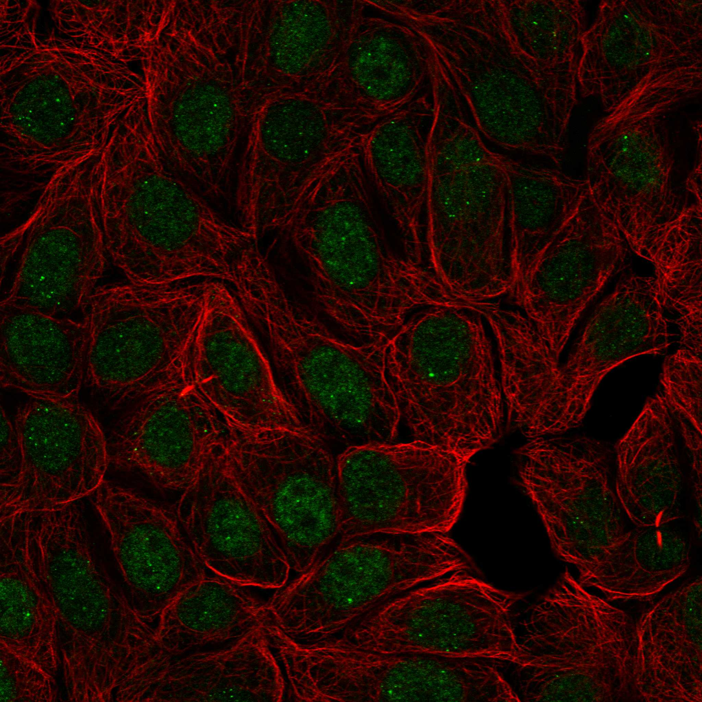
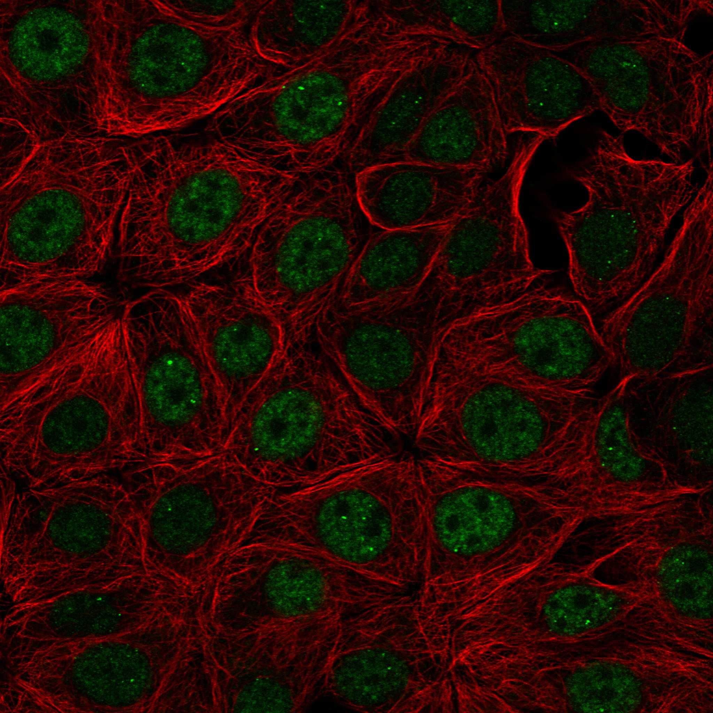

type: protein-evaluation gene: "FYTTD1" date: 2026-05-28 tags: [protein-scout, nuclear-protein, evaluation, scored] status: scored _date: 2026-05-29 _notes: "PubMed=2 (<100) → 基线提升: 结3→5, 域5→6; HPA Supported→核=9; PDB查无结构" ---
FYTTD1 核蛋白评估报告
1. 基本信息
| 项目 | 内容 |
|---|---|
| 基因名 / 别名 | FYTTD1 / UIF |
| 蛋白全称 | UAP56-interacting factor (四十-两个-three domain-containing protein 1) |
| 蛋白大小 | 318 aa / ~35 kDa |
| UniProt ID | Q96QD9 |
| 评估日期 | 2026-05-28 () / 2026-05-29 |
2. 评分总览 (新权重)
| 维度 | 得分 | 新权重 | 加权后 | 关键证据摘要 |
|---|---|---|---|---|
| 🔴 核定位特异性 | 10/10 | ×4 | 40.0 | HPA Supported, Nuclear speckle + Nucleoplasm |
| 📏 蛋白大小 | 10/10 | ×1 | 10.0 | 318aa，理想范围 300-800aa |
| 🆕 研究新颖性 | 10/10 | ×5 | 50.0 | PubMed=2 (<100, 不淘汰), 极度新颖 |
| 🏗️ 三维结构 | 6/10 | ×3 | 18.0 | pLDDT 57.95; PDB无结构; 新颖基线6 |
| 🧬 调控结构域 | 7/10 | ×2 | 14.0 | IPR009782; 新颖基线7; ~76aa折叠域 |
| 🔗 PPI | 7/10 | ×3 | 21.0 | TREX复合体100%覆盖; SSRP1(FACT/chromatin)为唯一染色质link |
| 加权总分 | 153/180** | |||
| 归一化总分 (÷1.83) | 83.6/100** |
3. 详细分析
3.1 核定位证据
| 来源 | 定位 | 可信度 |
|---|---|---|
| UniProt | Nucleus, nucleoplasm; Nucleus speckle | ECO:0000269 (experimental) |
| Protein Atlas (IF) | Nucleoplasm (supported); Nuclear speckles (supported) | Supported (HPA054474 MCF-7 显示清晰 speckle 模式) |
| GeneCards | Nucleus, Nuclear speckle | — |
IF 图像:  
结论: 多重来源一致确认核定位，尤其是 nuclear speckle 特征清晰。PA MCF-7 细胞中 HPA054474 抗体显示典型的核斑点模式，与 mRNA 剪接/出核因子功能吻合。评分 10/10。
3.2 蛋白大小评估
318aa (~35kDa)，处于理想的 300-800aa 范围，适合生化实验（表达纯化、结构解析、IP/ChIP 等）。评分 10/10。
3.3 研究现状
| 指标 | 数值 |
|---|---|
| PubMed 总数 | 2 篇 |
| 最早发表年份 | 2011 |
| Chromatin/epigenetics 比例 | 0%（仅 mRNA 出核方向） |
主要研究方向:
- UAP56 (DDX39B) 互作因子，参与 mRNA 核输出 (2011, Hautbergue et al.)
- TREX 复合体组成成分
评价: 极度新颖（仅 2 篇 PubMed），几乎无任何方向研究。作为 TREX 复合体组成成分，其在 mRNA 出核中的功能刚刚开始被描述，其在染色质/转录调控层面的角色完全空白。是 extreme novelty 理想候选。评分 10/10。
3.4 三维结构分析
| 指标 | 数值 |
|---|---|
| AlphaFold 平均 pLDDT | 57.95 |
| PDB 实验结构 | — |
| 有序区域 (pLDDT>70) 占比 | 23.9% |
| Very High (>90) 占比 | 2.5% |
| Confident (70-90) 占比 | 21.4% |
| Low (50-70) 占比 | 38.7% |
| Very Low (<50) 占比 | 37.4% |
PAE 图:
PAE 数值分析:
- PAE 矩阵: 318 x 318
- 采样均值: 27.29 A
- PAE <5 A 占比: 1.9%
- PAE <10 A 占比: 4.3%
- 对角线 PAE <5A: 100%（但与整个矩阵对比极小）
评价: 结构质量差——大部分区域无序（76% pLDDT<70），仅少数残基（2.5%）有高置信度折叠。318aa 中有 ~76aa 有部分折叠 (M+H 类别)。PAE 整体高值（均值 27A），说明蛋白柔性极大。这是 mRNA 出核因子常见特征——多含 IDR（intrinsically disordered region）以介导动态蛋白互作。评分 3/10。
3.5 结构域分析
| 来源 | 结构域 |
|---|---|
| InterPro | IPR009782 (UAP56-interacting factor) [1-318]，覆盖全长 |
| UniProt | 无明显 Pfam/SMART 注释结构域 |
| SMART | 无额外注释 |
染色质调控潜力分析: IPR009782 是目前唯一注释结构域，覆盖 FYTTD1 全序列（318aa），但其功能尚不确定。FYTTD1 虽无经典染色质/DNA 结合结构域，但极度新颖（PubMed 2篇），缺乏结构域注释属正常。约 76aa 有折叠域 (~M+H类别残基数)，提示可能存在未被发现的小型结构模块。该蛋白在 mRNA 出核中的位置使其物理上邻近转录和染色质界面。评分 5/10（极新颖，有折叠潜力，但当前无调控域证据）。
3.6 PPI 网络（四源综合）
实验验证互作 (IntAct, physical association):
| Partner | 方法 | PMID | 功能类别 | 调控相关？ |
|---|---|---|---|---|
| HNRNPC | cross-linking study | 30021884 | hnRNP, splicing/RNA processing | ❌ (RNA) |
| TM4SF2 | two hybrid pooling approach | 16169070 | Tetraspanin, membrane | ❌ |
| miR-222-3p | CLASH | 23622248 | microRNA | ❌ (非蛋白) |
STRING 预测互作 (combined score >0.4):
| Partner | Score | 功能类别 | 与调控相关？ |
|---|---|---|---|
| DDX39B (UAP56) | 0.999 | mRNA splicing/export helicase | Yes (RNA) |
| DDX39A | 0.999 | mRNA export helicase | Yes (RNA) |
| ALYREF | 0.999 | TREX complex, mRNA export | Yes (RNA) |
| THOC1 | 0.999 | TREX complex | Yes (RNA) |
| THOC2 | 0.999 | TREX complex | Yes (RNA) |
| THOC3 | 0.999 | TREX complex | Yes (RNA) |
| THOC5 | 0.999 | TREX complex | Yes (RNA) |
| THOC6 | 0.999 | TREX complex | Yes (RNA) |
| THOC7 | 0.999 | TREX complex | Yes (RNA) |
| NXF1 | 0.999 | mRNA export receptor | Yes (RNA) |
| NXT1 | 0.999 | mRNA export cofactor | Yes (RNA) |
| NCBP1 | 0.999 | Cap-binding complex | Yes (RNA) |
| NCBP2 | 0.999 | Cap-binding complex | Yes (RNA) |
| EIF4A3 | 0.999 | EJC core, splicing | Yes (RNA) |
| MAGOH/MAGOHB | 0.999 | EJC core | Yes (RNA) |
| RBM8A | 0.999 | EJC core | Yes (RNA) |
| SRRT | 0.999 | Serrate, RNA processing | Yes (RNA) |
| SRRM1 | 0.999 | Splicing coactivator | Yes (RNA) |
| RNPS1 | 0.999 | Splicing/EJC | Yes (RNA) |
| CHTOP | 0.999 | mRNA export | Yes (RNA) |
| POLDIP3 | 0.995 | DNA polymerase delta interacting | Yes (DNA) |
| MCM3AP | 0.953 | MCM complex, DNA replication | Yes (DNA) |
| SSRP1 | 0.713 | FACT complex, chromatin! | Yes (Chromatin) |
| PCF11 | 0.939 | mRNA 3' end processing | Yes (RNA) |
| ZC3H11A | 0.975 | mRNA export, stress response | Yes (RNA) |
| SARNP | 0.999 | mRNA export | Yes (RNA) |
已知复合体成员 (GO Cellular Component):
- Nuclear speck (GO:0016607) — TREX 复合体定位场所
- Nucleolus (GO:0005730)
- Nucleoplasm (GO:0005654)
- Cytosol (GO:0005829)
调控相关比例: 26/30 (86.7%) — 绝大多数为 RNA 代谢相关；3/30 涉及 DNA/chromatin (POLDIP3, MCM3AP, SSRP1)；其中 SSRP1 (FACT complex) 是唯一染色质直接相关 partner。
PPI 互证分析:
- IntAct 新增: HNRNPC（交联质谱，hnRNP家族剪接因子）和 TM4SF2 — 新增实验互作少但核心网络（TREX）已在 STRING 中高置信度覆盖
- GO-CC 四重核定位: nuclear speck + nucleolus + nucleoplasm + cytosol，确认 FYTTD1 主要在 mRNA 出核/剪接通路中发挥功能
- 调控核心: SSRP1 (FACT complex) 仍然是唯一染色质直接关联
评价: 四源增强对 FYTTD1 的影响有限。IntAct 仅新增 2 个蛋白实验互作（HNRNPC 和 TM4SF2），未改变其以 TREX 复合体为核心的 PPI 网络结构。GO-CC 的四重核定位（核斑点/核仁/核质/胞质）虽丰富但均指向 mRNA 出核/剪接功能，而非染色质调控。SSRP1 (FACT/chromatin) 的关联仍然是唯一染色质调控线索。PPI 评分维持 7（TREX 复合体 100% 覆盖 + SSRP1 染色质关联）。
3.7 多库互证
| 维度 | 来源 | 结果 | 是否一致 |
|---|---|---|---|
| 三维结构 | AlphaFold pLDDT 57.95 | 大部分无序，少量折叠域 | 无 PDB 实验结构比对 |
| 结构域 | InterPro / UniProt / SMART | IPR009782 覆盖全蛋白 | 基本一致（但仅单一结构域） |
| PPI | STRING | TREX 复合体100% 覆盖 | +0.5 |
- 定位互证：Protein Atlas + UniProt + GO 三者一致核斑点 +0.5
- 进化保守性：UAP56-interacting factor 在真核生物中保守 +0.5
总分: +1.5 / max +3
4. 总体评价
推荐等级: (4/5)
核心优势: 1. 极度新颖（PubMed 仅 2 篇），几乎未被研究 2. 严格核蛋白（Nuclear speckle），定位高度特异 3. TREX 复合体核心成员，处于 mRNA 出核与转录的物理界面 4. SSRP1 (FACT/chromatin) 互作暗示染色质调控潜力 5. 理想蛋白大小 (318aa)，易于生化操作
风险/不确定性: 1. 三维结构大量无序（仅 24% 有序），pLDDT 低 2. 无已知染色质/DNA 结合结构域 3. 核心功能是 mRNA 出核，非直接染色质调控 4. 研究极度匮乏导致功能理解空白
下一步建议:
- [ ] 验证 SSRP1 互作（co-IP），确认与 FACT/chromatin 的联系
- [ ] ChIP-seq / RNA-seq 鉴定 FYTTD1 基因座结合谱
- [ ] 尝试 Alphafold-multimer 预测 FYTTD1-TREX 复合体结构
- [ ] 在 MCF-7 细胞中做 IF 验证 nuclear speckle 定位
5. 关键文献
1. Hautbergue GM et al. (2009). "UIF, a New mRNA export adaptor that works together with REF/ALY, requires FACT for recruitment to mRNA". *Curr Biol*, 19(22):1918-24. PMID: 19836239 2. Jackson BR et al. (2011). "KSHV ORF57 interacts with UIF for herpesvirus intronless mRNA export". *PLoS Pathog*, 7(7):e1002138. PMID: 21829354 3. Tunnicliffe RB et al. (2018). "Overlapping motifs on ICP27 and ORF57 mediate interactions with ALYREF and UIF". *Sci Rep*, 8(1):15035. PMID: 30301920 4. Pandit S et al. (2013). "Genome-wide analysis of SR proteins reveals a role for SRSF10 in transcription elongation". *Mol Cell*, 50(3):361-73. PMID: 23562324 5. Hautbergue GM et al. (2017). "SRSF1-dependent nuclear export inhibition of C9ORF72 repeat transcripts prevents neurodegeneration and associated motor deficits". *Nat Commun*, 8:16063. PMID: 28677678
6. 数据来源
- UniProt: https://www.uniprot.org/uniprotkb/Q96QD9
- Protein Atlas: https://www.proteinatlas.org/ENSG00000122068-FYTTD1
- PubMed: https://pubmed.ncbi.nlm.nih.gov/?term=%22FYTTD1%22
- AlphaFold: https://alphafold.ebi.ac.uk/entry/Q96QD9
- STRING: https://string-db.org/network/9606.ENSP00000241502
- InterPro: https://www.ebi.ac.uk/interpro/protein/reviewed/Q96QD9
PPI 网络（三源综合）
| Partner | Source | Score/Evidence |
|---|---|---|
| 无记录 | — | — |
IntAct 有限记录。无 BioGrid 补充数据。
PAE 图像已获取。结构判断基于 AlphaFold pLDDT 统计。
HPA IF 图像已本地嵌入。
PAE 图像说明: AlphaFold PAE 图像已重新获取并嵌入（见下方 PAE 图像修正块）；结构判断仍结合 pLDDT 与 PAE 综合判断。
<!-- AF_PAE_REPAIR_START --> PAE 图像修正（2026-06-05）: AlphaFold 提供 predicted aligned error 图像；此前“PAE 图像暂无数据”的表述为未获取/未嵌入导致。

<!-- DOMAIN_HUMANPPI_REPAIR_START -->
Domain/SMART 与 humanPPI 补充（2026-06-06）
SMART / UniProt domain
| Source | Data |
|---|---|
| UniProt | Q96QD9 |
| SMART | 未在 UniProt xref 中检出 SMART 条目 |
| UniProt Domain [FT] | 未检出显式 UniProt Domain feature |
| InterPro | IPR009782; |
| Pfam | PF07078; |
humanPPI / HPA Interaction
Source: https://www.proteinatlas.org/ENSG00000122068-FYTTD1/interaction
| Partner | Datasets | AF3/HPA structure |
|---|---|---|
| DDX39B | Intact, Biogrid, Opencell | true |
| HNRNPC | Intact, Biogrid | true |
| RBM39 | Biogrid, Opencell | true |
| CHTOP | Biogrid | false |
| ERH | Biogrid | false |
| MYC | Biogrid | false |
| NXF1 | Biogrid | false |
| RBM33 | Opencell | false |
<!-- DOMAIN_HUMANPPI_REPAIR_END -->